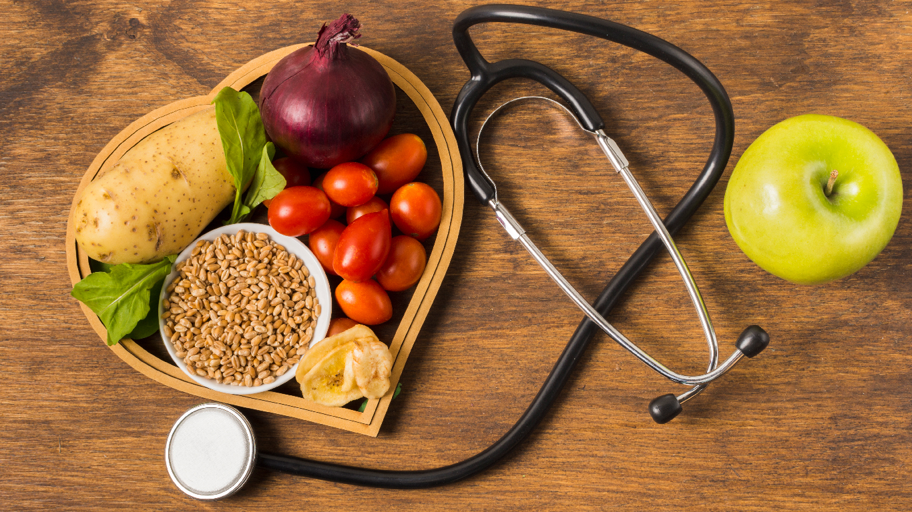

O que é uma alimentação saudável?
Alimentação saudável é aquela que fornece todos os nutrientes fundamentais para o funcionamento do nosso corpo, como carboidratos, lipídios, proteínas, sais minerais e vitaminas. Muitas pessoas acreditam que os carboidratos e lipídios são vilões quando o assunto é uma alimentação adequada, entretanto os carboidratos são uma importante fonte de energia para o nosso corpo, e os lipídios atuam, entre outras funções, na formação de certos hormônios, na proteção contra choques mecânicos e no transporte de vitaminas.
Benefícios de uma alimentação equilibrada
De acordo com a Organização Pan-Americana da Saúde (OPAS, 2019), os benefícios de uma alimentação
equilibrada são:
01.
Uma alimentação saudável ajuda a proteger
contra a má nutrição em todas as suas
formas,
bem como contra as doenças crônicas não transmissíveis (DCNT), entre elas diabetes, doenças cardiovasculares, AVC e câncer.
02.
A alimentação não ;saudável e a falta de atividade física são os principais riscos globais para a saúde.
03.
Práticas alimentares saudáveis começam cedo
na vida. A amamentação, por exemplo,
promove crescimento e melhora o desenvolvimento cognitivo. Além disso, pode ter benefícios a longo
prazo para a saúde, reduzindo o risco de obesidade e de sobrepeso, bem como de desenvolvimento de
DCNT.
04.
A ingestão calórica deve estar em equilíbrio com o gasto calórico. Para evitar um ganho de peso não saudável, as gorduras não devem exceder 30% da ingestão calórica total (1, 2, 3).
05.
As gorduras saturadas devem representar
menos de 10% da ingestão calórica total.
O
consumo de gorduras trans, por sua vez, deve ser inferior a 1% do consumo total.
Para isso ser possível, o consumo de gorduras deveria ser modificado para reduzir as gorduras saturadas e trans para gorduras insaturadas (3), com o objetivo de eliminar a gordura trans produzida industrialmente (4, 5, 6).
06.
Limitar o consumo de açúcares livres para menos de 10% da ingestão calórica total (2, 7) faz parte de uma alimentação saudável. Uma redução adicional para menos de 5% é sugerida para benefícios adicionais à saúde (7).
07.
Manter o consumo diário de sal abaixo de 5g (o equivalente a menos de 2g de sódio) ajuda a prevenir a hipertensão e reduz o risco de doença cardiovascular e AVC entre a população adulta (8).
08.
Os Estados Membros da OMS concordaram em reduzir a ingestão de sal da população
mundial em 30% até 2025. Também concordaram em deter o aumento do diabetes e da obesidade entre adultos e adolescentes, bem como o sobrepeso durante a infância até 2025